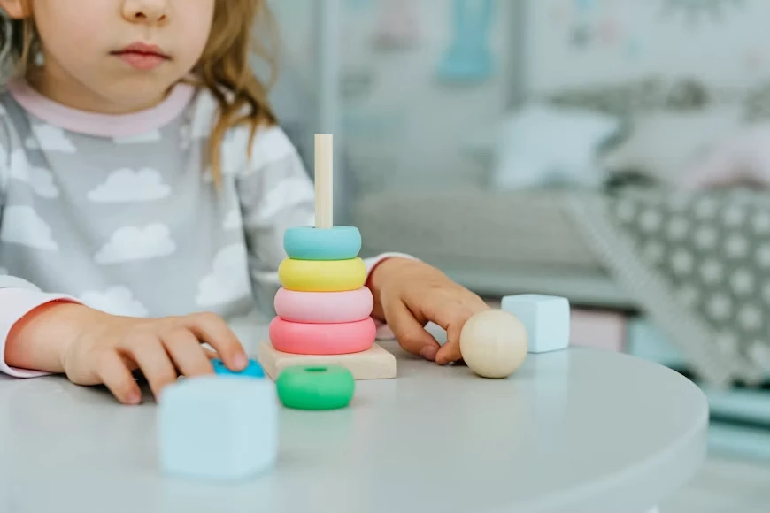
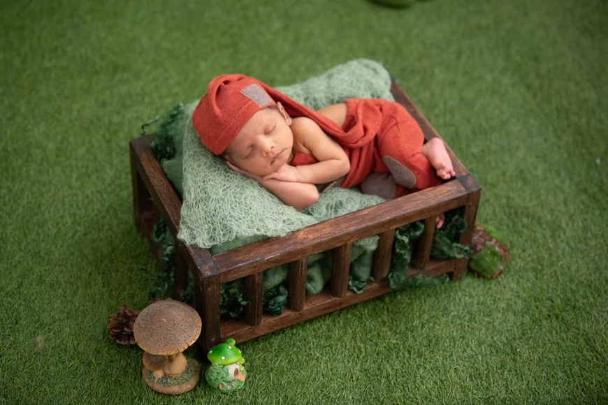
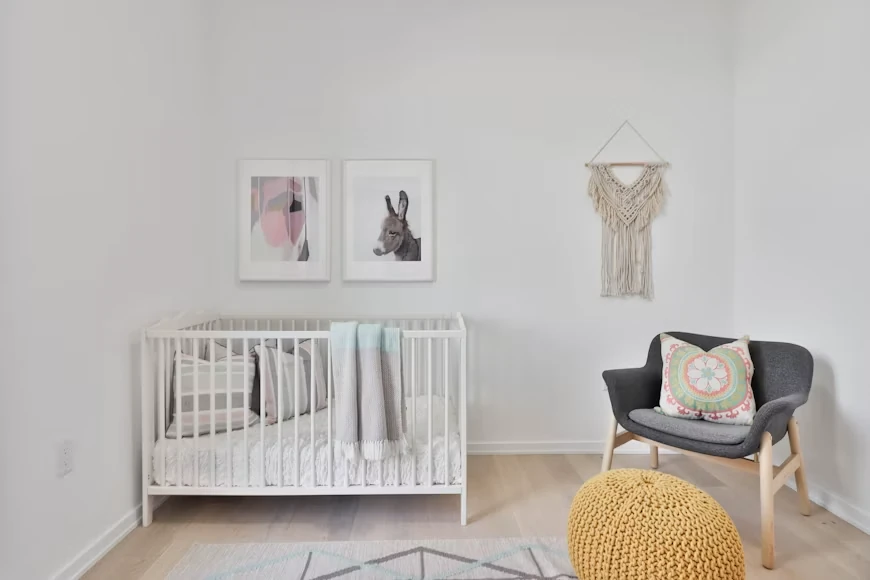
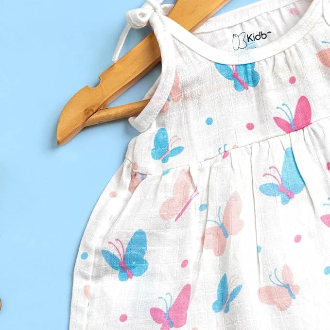
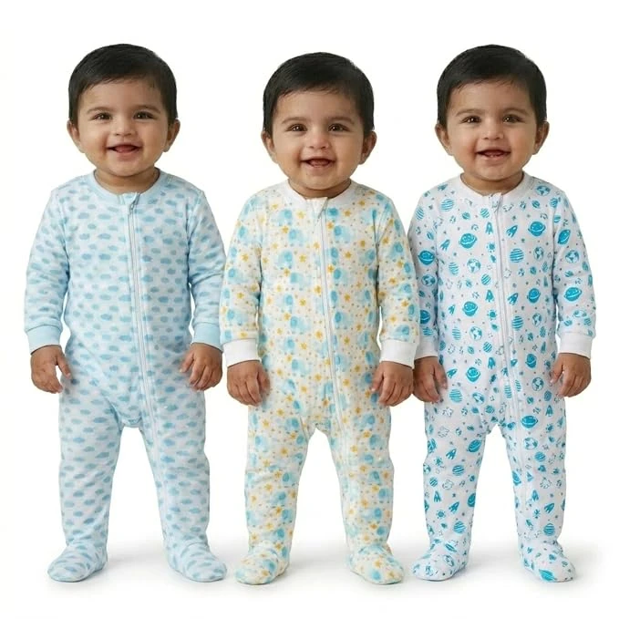
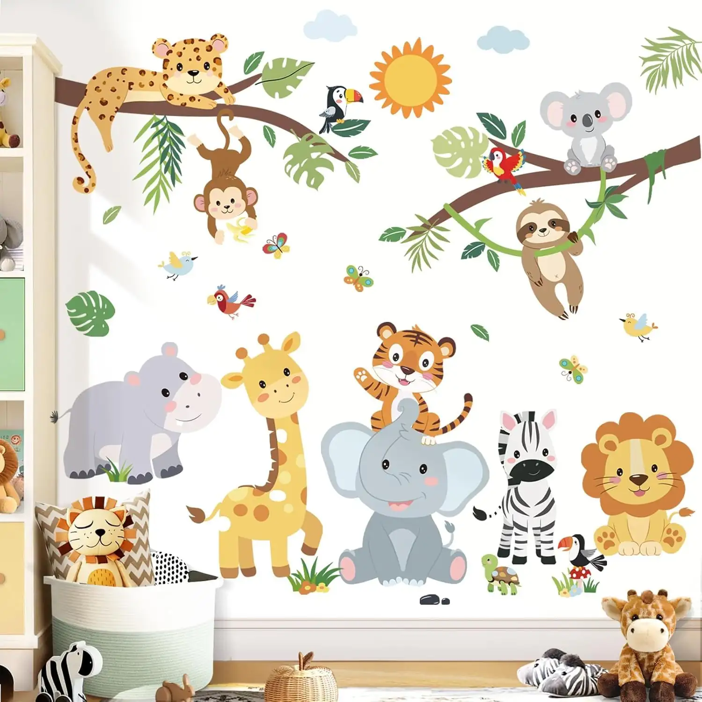

Open-ended toys: what actually holds a toddler's attention
We tested 20 toys over three months. Here's what survived.
Read more
A simple, pediatrician-reviewed way to dress your newborn for sleep — in any season, without a thermometer.
Read the guide
We tested 20 toys over three months. Here's what survived.
Read more
Real layouts from three Stackly families in city apartments.
Read more
A plain-language breakdown of GOTS, OEKO-TEX and what to actually check.
Read more
One garment, three children, eight years. A real closet audit.
Read moreFour signals to watch for, and how to shift the schedule gently.
Read more
Neutral doesn't have to mean boring — our styling team's approach.
Read more